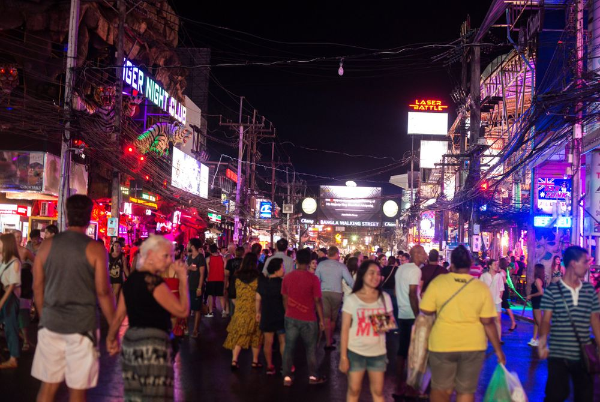
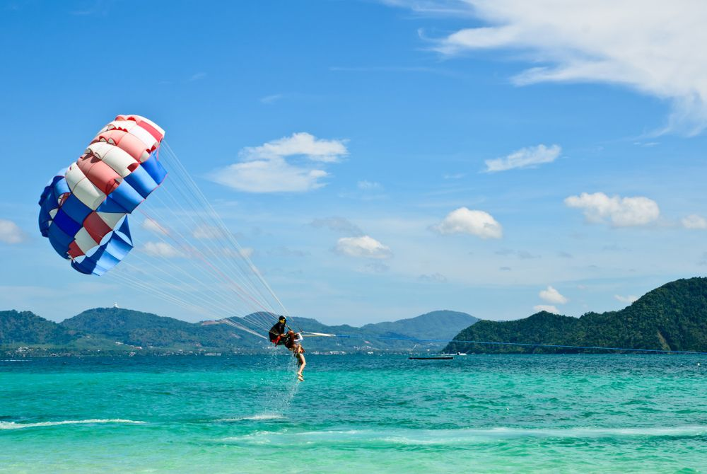
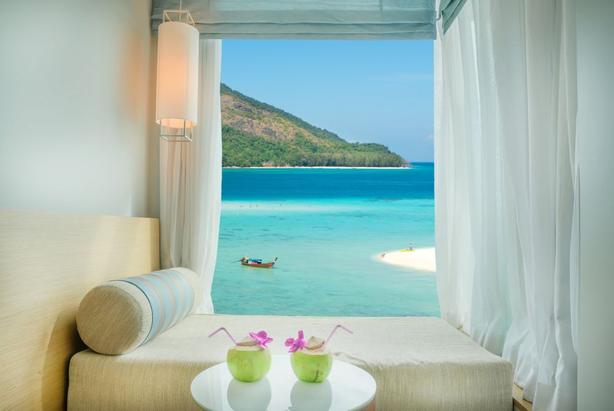
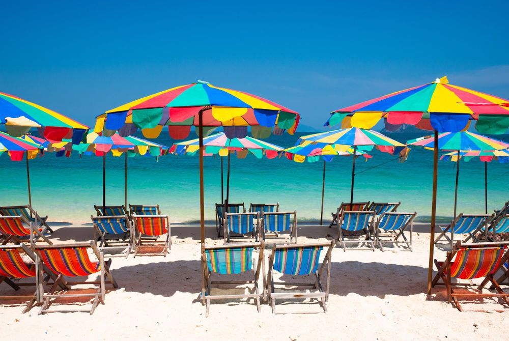
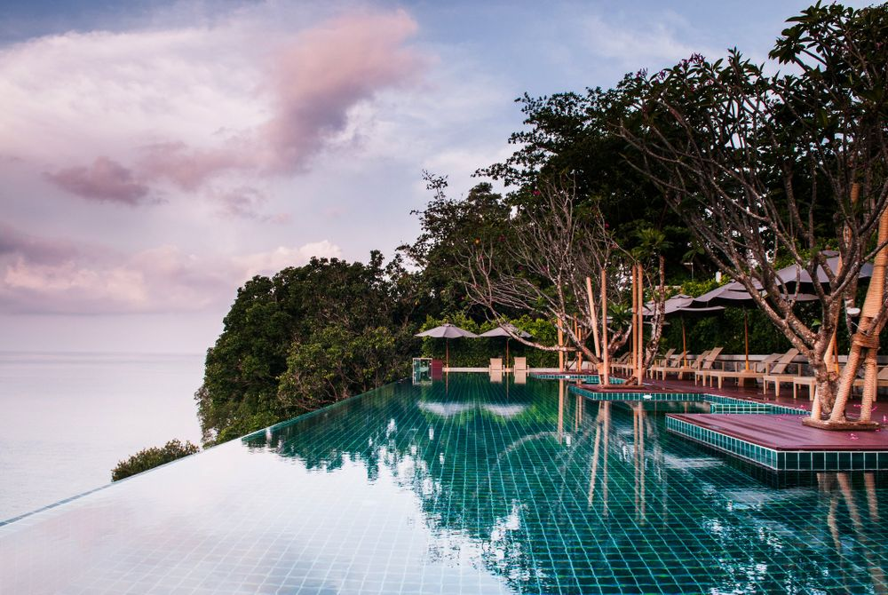
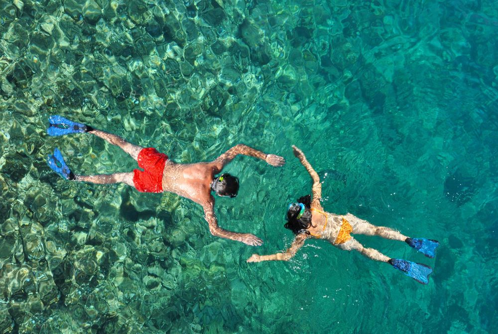

Het tropische Phuket heeft een bosrijk binnenland en sensationeel mooie kust. Je vindt er bruisende badplaatsen en kunt er perfect para-sailen, waterskiën of windsurfen. En of je nou komt voor de rust of voor het vertier: Phuket is voor iedereen een veelzijdige droombestemming.

Het eiland Phuket ligt in het westen van Thailand en wordt omringd door nog heel veel meer kleinere eilandjes. Het wordt ook wel de ’Parel van het zuiden’ genoemd, en dat is niet voor niets. De heerlijke stranden, mooie tempels, prachtige baaitjes en het bruisende nachtleven zijn de ingrediënten voor een fantastische reis.
Phang Nga Bay
Voor zachte zandstranden, helderblauw water en adembenemend mooie baaitjes moet je in de omgeving van Phuket zijn. Relatief verlaten strandjes zijn Ao Sane Beach, Ao Yon Beach en Banana Beach, maar verreweg de meest schilderachtige plek ligt iets verderop. Phang Nga Bay vind je op een uurtje varen van Phuket. In deze prachtige baai vergaap je je aan de enorme kalkstenen rotsformaties, die hoog boven het water uit komen. In de jaren zeventig was deze groep eilandjes het decor van de James Bond film ’The man with the golden gun’ en sindsdien wordt het hier ook wel James Bond Island genoemd. De toeristenbureautjes in Phuket kunnen vrijwel allemaal een dagtripje naar dit idyllische stukje Thailand voor je regelen.
Big Buddha Chalong
De bekendste attractie van Phuket is het gigantische boeddhabeeld dat van bijna overal op het eiland te zien is. De met marmer bedekte boeddha zit bovenop een berg en torent maar liefst 400 meter boven het zeeniveau uit. Het is daarom het beste uitzichtpunt van het hele eiland en dat maakt de klim omhoog een klein beetje goed. Om er te komen moet je een zes kilometer lang pad volgen, dat zich al slingerend door de bossen een weg naar boven baant.
Nachtleven van Phuket
Als je ergens goed kan stappen dan is het op Phuket. Patong Beach is het toeristische centrum van het eiland en is de laatste jaren uitgegroeid tot een levendige badplaats. Over een lengte van vier kilometer vind je tal van restaurants, café’s en bars en wanneer de zon onder gaat verandert het rustige Bangla Road in een bruisend uitgaansgebied. De neonverlichting knippert op het ritme van de muziek, de straten stromen vol met feestgangers en het bier vloeit rijkelijk. Wat je allemaal kan doen? De mogelijkheden zijn eindeloos. Je kan gaan dansen in een discotheek, een bokswedstrijd bekijken, naar een Go-Go bar of nachtclub, of helemaal bijzonder: een extravagante voorstelling met de allermooiste ladyboys bekijken.

Watervallen
Een paar van de mooiste en grootste watervallen van Thailand bevinden zich in het oosten van Phuket. De Bang Pae waterval in het Khao Phra Thaeo National Park is tien meter hoog en in de frisse waterpoel kan je heerlijk zwemmen. De nabijgelegen Ton Sai waterval is minder indrukwekkend om te zien, maar is wel prachtig gelegen in een groen bos. Ten slotte de Kathu waterval, deze stroomt via vier verdiepingen naar beneden en eindigt in een uitnodigende poel met water. Neem droge kleren, een picknickkleed en wat versnaperingen mee, en je bent hier zo een hele dag zoet.
Watersporten
Met zoveel zee in de buurt is er natuurlijk een hoop op en in het water te doen. Zo kun je fantastisch surfen bij het plaatsje Hat Kata, lenen de kleinere baaitjes zich perfect om te leren kiteboarden en is er geen leukere manier om de prachtige kust te ontdekken dan per kano of kajak. Snorkelen of duiken kan ook, in de wateren rondom Phuket vind je prachtig koraal en kleurrijke vissen. Phuket is daarnaast een geliefde bestemming om te verkennen met een plezierjacht of zeilboot. Vraag daarvoor een beetje rond bij de havens. Er zijn verschillende bureautjes die een meerdaagse tocht over het water voor je kunnen regelen.


Als het op slapen aankomt, dan zit je op Phuket goed. Het eiland staat bekend om zijn vele prachtige resorts. Denk aan luxe bungalows met een privé zwembad, huisjes met de mooiste uitzichten en gezellige cottages direct aan het strand. Zoek er eentje uit met een bijbehorende spa en laat je een paar dagen volledig in de watten leggen.
Net als elders in het Thailand, ga je in Phuket ook zeker een aantal tempels tegenkomen. In Phuket vind je er ongeveer dertig. De Wat Chalong is interessant vanwege de vele boeddhabeelden op de eerste en tweede verdieping. In de pagode zou daarnaast ook een splinter van Boeddha liggen, en daarom behoort deze tempel tot de belangrijkste van het eiland. De Wat Phra Thong is beroemd vanwege de half begraven gouden Boeddha. Volgens de legende word je vervloekt wanneer je het beeld probeert uit te graven, dus hebben de gelovigen er maar een tempel omheen gebouwd.
Reizen naar Phuket — Hoe kom je er?
Vanuit Nederland gaan geen directe vluchten naar het internationale vliegveld van Phuket, en dus moet je ergens overstappen. Dat kan in de hoofdstad Bangkok, maar ook steden als Kuala Lumpur en Dubai hebben een directe verbinding met Phuket International Airport. De prijs voor een retourtje begint bij € 550, afhankelijk van de maatschappij en wanneer je vertrekt. Eenmaal geland in Phuket kun je de bus of taxi naar je volgende bestemming nemen.

Een van de stranden rondom Phuket

Luxueus hotel op Phuket

Snorkelen met exotische vissen in het helderblauwe water rondom Phuket